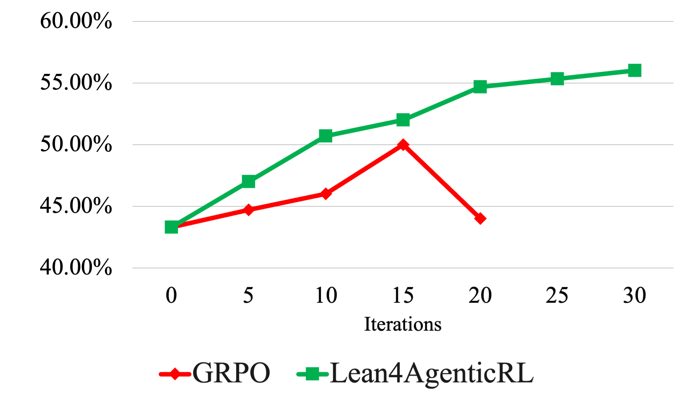

Formalizes agent workflows as Lean 4 specifications, building on the Lean4Agent library, and checks decidable stage predicates in Lean to supply multi-level RL rewards.
Abstract
Enhancing the agentic capabilities of Large Language Models (LLMs) to tackle complex software engineering (SWE) and general terminal-usage problems is a pressing challenge. Current state-of-the-art LLMs often go through large-scale agentic Reinforcement Learning (RL). However, they mostly rely on high-level outcome rewards, with minimal consideration of low-level toolcall and mid-level workflow-stage rewards, which makes the training less effective. To overcome this limitation, we propose **Lean4AgenticRL**, which, to the best of our knowledge, is the first framework that grounds multi-level process rewards in the unified Lean4 formalization schema for open-ended agentic RL. **Lean4AgenticRL** first builds a *problem-specific workflow* system that balances the agent's own capability and controllability during execution, laying the foundation for further verification. Subsequently, our workflow formalization and multi-level reward annotation methods enable agent behavior verification within a general harness system. It provides multi-level rewards to support more effective agentic RL with the workflow-stage-normalized GRPO algorithm. Using **Lean4AgenticRL**, we train **LAR-9B/27B**, a family of models with enhanced agentic capability. Extensive experiments indicate that our model outperforms the leading model of similar size. **LAR-27B** achieves **77.3%** on TerminalBench-2.1. On average, our models outperform the base model by **9.89%** and surpass the second-best model of comparable size we know by **5.07%**. These results indicate the potential of integrating formal methods in enhancing open-ended agentic RL.
Problem
Agentic RL for software engineering and terminal tasks mostly relies on sparse outcome rewards. These rewards cannot tell useful intermediate actions apart from redundant or harmful ones in long agent traces.
Approach
An agent first plans a problem-specific workflow and then executes it. The workflow is formalized into a Lean 4 schema built on the Lean4Agent library, with pre- and post-conditions for each stage. Trajectories are split into workflow stages, which receive stage-level rewards, while individual tool calls receive tool-call rewards. Decidable predicates, such as checks for reward-hacking patterns, are verified by Lean or Python checkers, and semantic predicates are judged by an LLM. Models are trained with a workflow-stage-normalized GRPO variant that combines outcome, stage, and tool-call rewards.
Results
LAR-27B reaches 84.2% on SWE-Bench-Verified, 68.2% on TerminalBench-2.0, and 77.3% on TerminalBench-2.1. On average, the LAR models beat their base models by 9.89% and the next-best comparable-size model by 5.07%. Ablations show gains from tool-call rewards and from problem-specific workflows.

Figure 2: Lean4AgenticRL compared with GRPO in SWE by SWE-Bench-Verified and terminal usage tasks by TerminalBench-2.0.